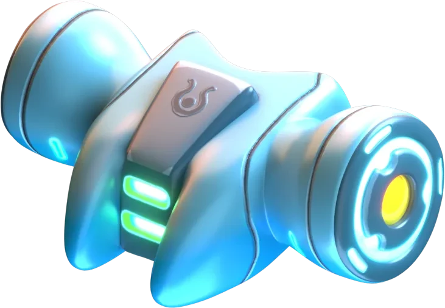
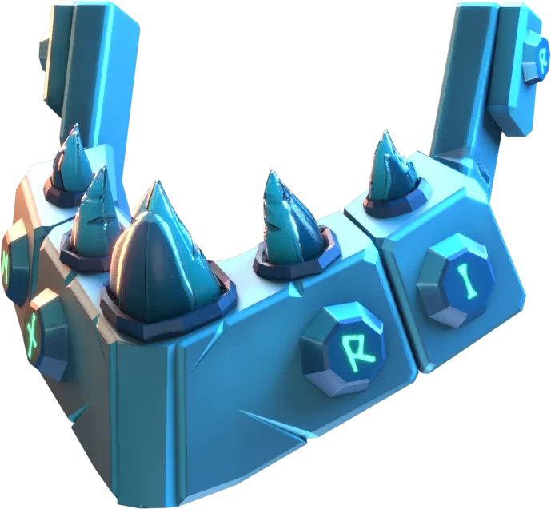
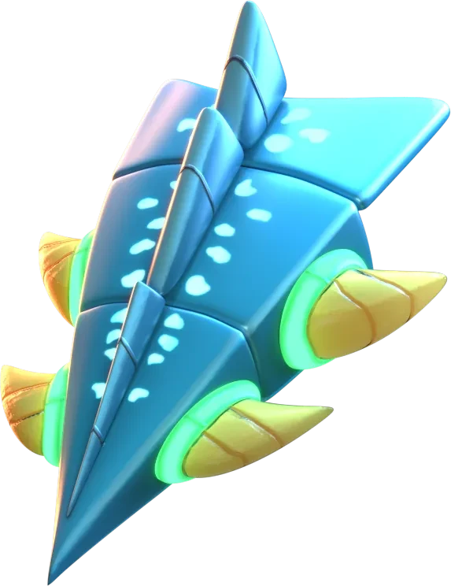

Suların en yırtıcı canlısının tasarımı tamamlandığında herkes çok memnun görünüyordu. Her şeyi parçalayabilecek çene yapısı yakın menzildeki rakiplerini yok edecekken hareketlerinin kıvraklığı sayesinde orta menzildeki rakiplere de rahatça erişebilecekti. Denizlerde nasılsa arenada da o şekilde yıkım saçacaktı.
Silahlar
Soundwave

Jaws

Chainsword

Köpek balığı şeklindeki bir robota nasıl bir silah eklenebilir düşüncesi dolaşıyordu laboratuvarda. Her kafadan bir ses yükselse de kulağa mantıklı gelmiyordu. Poseidon olaya dahil olup ses duyma yetilerinden yola çıkılabileceğini söyledi. Buna göre ses dalgası üreten bir tasarım çizildi. Aşkına karşılık alamayan Echo’nun her yerden duyulan feryadı olacaktı bu ses dalgaları. Bunların ne kadar kuvvetli olduğunu kimse kanıtlamaya çalışmadı bile.
Thor, köpek balıklarının dünyadaki güçlü canlılardan olduğunu biliyordu. Her şeyi parçalayabilecek kadar güçlü bir çene yapısı vardı. Aklına Fenrir’in zincirlere direnirken Tanrı Try’ın elini nasıl kopardığı geldi. Direkt Fenrir’in çene yapısının kopyalanmasını ve köpek balığına uyarlanmasını istedi. Eğer başarabilirlerse en güçlü ve parçalayıcı silahlardan birini yapabileceklerdi. Tasarımı çizerken gelecek sonucu da merakla bekliyordu.
Su tanrısı Ukulan, Kayra’nın odasına adımını attı ve köpek balığına eklenecek silah için fikrini sundu. Balıkları korumak onun göreviydi ve insanların kullandığı zıpkın çok zorlu bir silahtı. Zıpkın gibi düşmanı delip geçen ve kendine çeken bir silah, Kayra’nın kulağına hoş gelse de eksikti. Ukulan ise bunu da düşünmüş gibi, zıpkının kılıç olarak da kullanılabilmesini istedi. Hem rakibini delecek ve kendine çekecek hem de çektiği savunmasız rakibini biçecek bir silah, ölümün kendisi olacaktı.